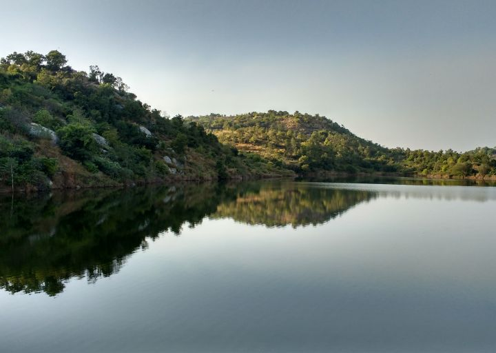

Manchanabele is a quaint village, located in Ramanagara District, which is 40 km away from Bengaluru. Known for being a nature lover’s paradise, this beautiful place is a welcome change from the hustle and bustle of the city.
|  |
One of the most famous attractions here is the Manchanabele Reservoir. Built on the Arkavathi river to irrigate nearby farms, this massive dam offers a serene view of the lush greenery around and crystal-clear water. Initially tourists were allowed to visit the dam, however, due to accidents in the area, now visitors are not allowed to go till the reservoir. You can view the dam from the nearby hilltops and click some amazing shots of the breathtaking views. If you want to relax with family and friends, this place makes an ideal picnic spot. For those who love adventure, there are resorts around the small hilltops that offer trekking, mountain climbing, kayaking, canoe rides, rappelling, and other activities. Manchanabele Dam is also home to a variety of flora and fauna, making the place a treat for bird watchers. The best time to visit the dam would be from October to March. That’s the apt time when the dam will be filled with water and the weather is pleasant. |
-Just a guy who travels and shares his experience